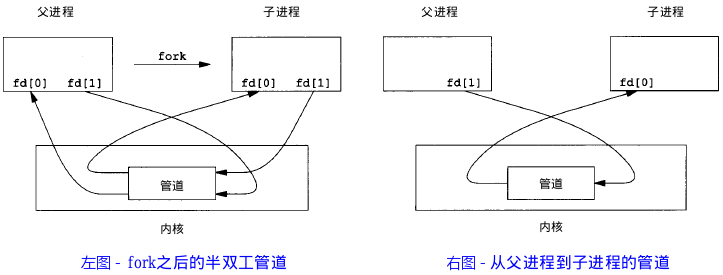
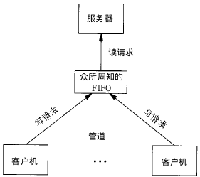

4,749 words in total, 22 minutes required. 本文转载自引用[1] 进程间通信 (IPC, InterProcess Communication) 是指在不同进程之间传播或交换信息。 IPC的方式通常由管道（包括无名管道和命名管道）、消息队列、信号量、共享存储、Socket、Streams等。其中Socket和Streams支持在不同主机上进行IPC。 1. 管道管道，通常指无名管道，是UNIX系统IPC中最古老的形式。 1.1 特点 半双工（数据只能在一个方向上流动），读端和写端是固定的； 只能用于具有亲缘关系的进程之间的通信（也就是父子进程或者兄弟进程之间）； 它可看成一种特殊的文件，对于它的读写可以使用普通的read、write等函数。但其不是普通的文件，也不属于任何文件系统，并且只能存在于内存之中。 1.2 原型12#include<unistd.h>int pipe(int fd[2]); // 返回值：若成功返回0，失败返回-1 当一个管道建立时，会创建两个文件描述符：fd[0]为读而打开，fd[1]为写而打开，如下图 pipe例子 要关闭管道只需要将这两个文件描述符关闭即可。 1.3 例子单个进程中的管道几乎没有任何用处。通常调用pipe的进程接着调用fork，这样就创建了父进程与子进程之间的IPC通道，如下图： pipe+fork 如果要数据流从父进程流向子进程，则关闭父进程的读端 (fd[0]) 与子进程的写端 (fd[0])；反之，这可以使得数据流从子进程流向父进程。 123456789101112131415161718192021222324252627#include<stdio.h>#include<unistd.h>int main(){ int fd[2]; // 两个文件描述符 pid_t pid; char buff[20]; if(pipe(fd) < 0) // 创建管道 printf("Create Pipe Error!\n"); if((pid = fork()) < 0) // 创建子进程 printf("Fork Error!\n"); else if(pid > 0) // 父进程 { close(fd[0]); // 关闭读端 write(fd[1], "hello world\n", 12); } else { close(fd[1]); // 关闭写端 read(fd[0], buff, 20); printf("%s", buff); } return 0;} 2. FIFOFIFO，也称为命名管道，它是一种文件类型。 2.1 特点 FIFO可以在无关的进程之间交换数据，与无名管道不同； FIFO有路径名与之相关联，是一种特殊设备文件形式存在于文件系统中。 2.2 原型123#include<sys/stat.h>// 返回值： 成功返回0，出错返回-1int mkfifo(const char *pathname, mode_t mode) 其中的mode参数与open函数中的mode相同，一旦创建了一个FIFO，就可以用一般的文件I/O函数操作它。 当open一个FIFO是，是否设置非阻塞标志 (O_NONBLOCK)的区别： 若没有指定O_NONBLOCK (默认)，只读open要阻塞到某个其他进程为写而打开此FIFO。类似的，只写open要阻塞到某个其他进程为读而打开它； 若指定了O_NONBLOCK，则只读open立即返回。而只写open将出错返回-1如果没有进程已经为读而打开该FIFO，其errno为ENXIO。 2.3 例子FIFO的通信方式类似于在进程中使用文件来传输数据，只不过FIFO类型文件同时具有管道的特性。在数据读出时，FIFO管道中同时清除数据，并且“先进先出”，下面给出一个例子： write_fifo.c 12345678910111213141516171819202122232425262728293031323334353637#include<stdio.h>#include<stdlib.h> // exit#include<fcntl.h> // O_WRONLY#include<sys/stat.h>#include<time.h> // timeint main(){ int fd; int n, i; char buf[1024]; time_t tp; printf("I am %d process.\n", getpid()); // 说明进程ID if((fd = open("fifo1", O_WRONLY)) < 0) // 以写打开一个FIFO { perror("Open FIFO Failed"); exit(1); } for(i = 0; i < 10; ++i){ time(&tp); n=sprintf(buf,"Process %d's time is %s",getpid(),ctime(&tp)); printf("Send message: %s", buf); // 打印 if(write(fd, buf, n+1) < 0) // 写入到FIFO中 { perror("Write FIFO Failed"); close(fd); exit(1); } sleep(1); // 休眠1秒 } close(fd); // 关闭FIFO文件 return 0;} read_fifo.c 123456789101112131415161718192021222324252627#include<stdio.h>#include<stdlib.h>#include<errno.h>#include<fcntl.h>#include<sys/stat.h>int main(){ int fd; int len; char buf[1024]; if(mkfifo("fifo1", 0666) < 0 && errno!=EEXIST) // 创建FIFO管道 perror("Create FIFO Failed"); if((fd = open("fifo1", O_RDONLY)) < 0) // 以读打开FIFO { perror("Open FIFO Failed"); exit(1); } while((len = read(fd, buf, 1024)) > 0) // 读取FIFO管道 printf("Read message: %s", buf); close(fd); // 关闭FIFO文件 return 0;} 可以在两个终端里用 gcc分别编译运行上面两个文件，查看结果。 上述例子可以扩展成 客户进程-服务器进程 通信的实例，write_fifo的作用类似于客户端，可以打开多个客户端向一个服务器发送请求信息，read_fifo类似于服务器，实时监控着FIFO的读端，当有数据时，读取并进行处理，但是有一个关键问题是，每一个客户端必须预先知道服务器提供的FIFO接口，如下图所示： fifo 3. 消息队列消息队列，是消息的链接表，存放在内核中。一个消息队列由一个标识符（即队列ID）来标识。 3.1 特点 消息队列是面向记录的，其中的消息具有特定的格式及特定的优先级； 消息队列独立于发送与接收的进程。进程终止时，消息队列及其内容不会被删除； 消息队列可以实现消息的随机查询，消息不一定要按照先进先出的次序读取，也可以按照消息的类型读取。 3.2 原型12345678910111213#include<sys/msg.h>// 创建或打开消息队列：成功返回队列ID，失败返回-1int msgget(key_t key, int flag);// 添加消息：成功返回0，失败返回-1int msgsnd(int msqid, const void *ptr, size_t size, int flag);// 读取消息：成功返回消息数据的长度，失败返回-1int msgrcv(int msqid, void *ptr, size_t size, long type, int flag);// 控制消息队列：成功返回0，失败返回-1int msgctl(int msqid, int cmd, struct msqid_ds *buf); 在以下两种情况下，msgget将创建一个新的消息队列：1. 如果没有与键值key相对应的消息队列，并且flag中包含了IPC_CREAT标志位；2. key参数为IPC_PRIVATE。 函数msgrcv在读取消息队列时，type参数有以下几种情况：1. type == 0，返回队列中的第一个消息；2. type > 0，返回队列中消息类型为type的第一个消息；3. type < 0，返回队列中消息类型值小于或者等于type绝对值的消息，如果有多个，则取类型值最小的消息。 可看出，type值非0时用于以非先进先出次序读取消息，也可以把type看成优先级的权值。 3.3 例子下面是一个使用消息队列进行IPC的例子，服务端程序一直在等待特定类型的消息，当收到该类型的消息后，发送另一种特定类型的消息作为反馈，客户端读取该反馈并打印出来。 msg_server.c 1234567891011121314151617181920212223242526272829303132333435363738394041424344454647484950515253#include<stdio.h>#include<stdlib.h>#include<sys/msg.h>// 用于创建一个唯一的key#define MSG_FILE "/etc/passwd"// 消息结构struct msg_form { long mtype; char mtext[256];};int main(){ int msqid; key_t key; struct msg_form msg; // 获取key值 if((key = ftok(MSG_FILE,'z')) < 0) { perror("ftok error"); exit(1); } // 打印key值 printf("Message Queue - Server key is: %d.\n", key); // 创建消息队列 if ((msqid = msgget(key, IPC_CREAT|0777)) == -1) { perror("msgget error"); exit(1); } // 打印消息队列ID及进程ID printf("My msqid is: %d.\n", msqid); printf("My pid is: %d.\n", getpid()); // 循环读取消息 for(;;) { msgrcv(msqid, &msg, 256, 888, 0);// 返回类型为888的第一个消息 printf("Server: receive msg.mtext is: %s.\n", msg.mtext); printf("Server: receive msg.mtype is: %d.\n", msg.mtype); msg.mtype = 999; // 客户端接收的消息类型 sprintf(msg.mtext, "hello, I'm server %d", getpid()); msgsnd(msqid, &msg, sizeof(msg.mtext), 0); } return 0;} msg_client.c 123456789101112131415161718192021222324252627282930313233343536373839404142434445464748495051#include<stdio.h>#include<stdlib.h>#include<sys/msg.h>// 用于创建一个唯一的key#define MSG_FILE "/etc/passwd"// 消息结构struct msg_form { long mtype; char mtext[256];};int main(){ int msqid; key_t key; struct msg_form msg; // 获取key值 if ((key = ftok(MSG_FILE, 'z')) < 0) { perror("ftok error"); exit(1); } // 打印key值 printf("Message Queue - Client key is: %d.\n", key); // 打开消息队列 if ((msqid = msgget(key, IPC_CREAT|0777)) == -1) { perror("msgget error"); exit(1); } // 打印消息队列ID及进程ID printf("My msqid is: %d.\n", msqid); printf("My pid is: %d.\n", getpid()); // 添加消息，类型为888 msg.mtype = 888; sprintf(msg.mtext, "hello, I'm client %d", getpid()); msgsnd(msqid, &msg, sizeof(msg.mtext), 0); // 读取类型为777的消息 msgrcv(msqid, &msg, 256, 999, 0); printf("Client: receive msg.mtext is: %s.\n", msg.mtext); printf("Client: receive msg.mtype is: %d.\n", msg.mtype); return 0;} 4. 信号量信号量 (semaphore) 与已经介绍过的IPC结构不同，是一个计数器。信号量用于实现进程间的互斥和同步，而不用于存储进程间的通信数据。 4.1 特点 信号量用于进程间同步，若要在进程间传递数据需要结合_共享内存_； 信号量基于操作系统的PV操作[3]，程序对信号量的操作都是原子操作； 每次对信号量的PV操作不仅限于对信号量+1或者-1，可以加减任意正整数； 支持信号量组。 4.2 原型最简单的信号量只能取0和1的变量，这也是信号量最常见的一种形式，叫做_二值信号量_ (Binary Semaphore)。而可以取多个正整数的信号量也被称为通用信号量。 Linux下的信号量函数是在通用的信号量数组上进行操作，而不是在一个单一的二值信号量上进行操作。 12345678910#include<sys/sem.h>// 创建或获取一个信号量组：若成功返回信号量集ID，失败返回-1int semget(key_t key, int num_sems, int sem_flags);// 对信号量组进行操作，改变信号量的值：成功返回0，失败返回-1int semop(int semid, struct sembuf semoparray[], size_t numops);// 控制信号量的相关信息int semctl(int semid, int sem_num, int cmd, ...); 当semget创建新的信号量集合时，必须指定集合中信号量的个数 (即num_sems)，通常为1；如果是引用一个现有的集合，则将num_sems指定为0。 在semop函数中，sembuf结构的定义如下： 1234567struct sembuf{ short sem_num; // 信号量组中对应的序号，0~sem_nums-1 short sem_op; // 信号量值在一次操作中的改变量 short sem_flag; // IPC_NOWAIT, SEM_UNDO} 其中sem_op是一次操作中的信号量的改变量： 若sem_op > 0，表示进程释放相应的资源数，将 sem_op 的值加到信号量的值上。如果有进程正在休眠等待此信号量，则换行它们。 若sem_op < 0，请求 sem_op 的绝对值的资源。 若sem_op == 0，进程阻塞直到信号量的相应值为0。 5. 共享内存共享内存 (Shared Memory)，指两个或多个进程共享一个给定的存储区。 5.1 特点 共享内存是最快的一种IPC，因为进程是直接对内存进行存取； 因为多个进程可以同时操作，所以需要进行同步； 信号量+共享内存通常结合在一起使用，信号量用来同步对共享内存的访问。 5.2 原型12345678910111213#include<sys/sem.h>// 创建或获取一个共享内存：成功返回共享内存ID，失败返回-1int shmget(key_t key, size_t size, int flag);// 连接共享内存到当前进程的地址空间：成功返回指向共享内存的指针，失败返回-1void *shmat(int shm_id, const void *addr, int flag);// 断开与共享内存的连接：成功返回0，失败返回-1int shmdt(void addr*);// 控制共享内存的相关信息：成功返回0，失败返回-1int shmctl(int shm_id, int cmd, struct shmid_ds *buf); 当用shmget函数创建一段共享内存时，必须指定其size；而如果引用一个已存在的共享内存，则将size指定为0。 当一段共享内存被创建以后，它并不能被任何进程访问。必须使用shmat函数连接该共享内存到当前进程的地址空间，连接成功后把共享内存区对象映射到调用进程的地址空间，随后可像本地空间一样访问。 shmat函数是用来断开shmat建立的连接的。注意，并不是从系统中删除该共享内存，只是当前进程不能再访问该共享内存而已。 shmctl函数可以对共享内存执行多种操作，根据参数cmd执行相应的操作。常见的是IPC_RMID (从系统中删除该共享内存)。 5.3 例子下面这个例子，使用了【共享内存+信号量+消息队列】的组合来实现服务器进程与客户进程间的通信。 共享内存用来传递数据； 信号量用来同步； 消息队列用来在客户端修改了共享内存后通知服务器读取。 Server.c 123456789101112131415161718192021222324252627282930313233343536373839404142434445464748495051525354555657585960616263646566676869707172737475767778798081828384858687888990919293949596979899100101102103104105106107108109110111112113114115116117118119120121122123124125126127128129130131132133134135136137138139140141142143144145146147148149150151152153154155156157158159160#include<stdio.h>#include<stdlib.h>#include<sys/shm.h> // shared memory#include<sys/sem.h> // semaphore#include<sys/msg.h> // message queue#include<string.h> // memcpy// 消息队列结构struct msg_form { long mtype; char mtext;};// 联合体，用于semctl初始化union semun{ int val; /*for SETVAL*/ struct semid_ds *buf; unsigned short *array;};// 初始化信号量int init_sem(int sem_id, int value){ union semun tmp; tmp.val = value; if(semctl(sem_id, 0, SETVAL, tmp) == -1) { perror("Init Semaphore Error"); return -1; } return 0;}// P操作:// 若信号量值为1，获取资源并将信号量值-1// 若信号量值为0，进程挂起等待int sem_p(int sem_id){ struct sembuf sbuf; sbuf.sem_num = 0; /*序号*/ sbuf.sem_op = -1; /*P操作*/ sbuf.sem_flg = SEM_UNDO; if(semop(sem_id, &sbuf, 1) == -1) { perror("P operation Error"); return -1; } return 0;}// V操作：// 释放资源并将信号量值+1// 如果有进程正在挂起等待，则唤醒它们int sem_v(int sem_id){ struct sembuf sbuf; sbuf.sem_num = 0; /*序号*/ sbuf.sem_op = 1; /*V操作*/ sbuf.sem_flg = SEM_UNDO; if(semop(sem_id, &sbuf, 1) == -1) { perror("V operation Error"); return -1; } return 0;}// 删除信号量集int del_sem(int sem_id){ union semun tmp; if(semctl(sem_id, 0, IPC_RMID, tmp) == -1) { perror("Delete Semaphore Error"); return -1; } return 0;}// 创建一个信号量集int creat_sem(key_t key){ int sem_id; if((sem_id = semget(key, 1, IPC_CREAT|0666)) == -1) { perror("semget error"); exit(-1); } init_sem(sem_id, 1); /*初值设为1资源未占用*/ return sem_id;}int main(){ key_t key; int shmid, semid, msqid; char *shm; char data[] = "this is server"; struct shmid_ds buf1; /*用于删除共享内存*/ struct msqid_ds buf2; /*用于删除消息队列*/ struct msg_form msg; /*消息队列用于通知对方更新了共享内存*/ // 获取key值 if((key = ftok(".", 'z')) < 0) { perror("ftok error"); exit(1); } // 创建共享内存 if((shmid = shmget(key, 1024, IPC_CREAT|0666)) == -1) { perror("Create Shared Memory Error"); exit(1); } // 连接共享内存 shm = (char*)shmat(shmid, 0, 0); if((int)shm == -1) { perror("Attach Shared Memory Error"); exit(1); } // 创建消息队列 if ((msqid = msgget(key, IPC_CREAT|0777)) == -1) { perror("msgget error"); exit(1); } // 创建信号量 semid = creat_sem(key); // 读数据 while(1) { msgrcv(msqid, &msg, 1, 888, 0); /*读取类型为888的消息*/ if(msg.mtext == 'q') /*quit - 跳出循环*/ break; if(msg.mtext == 'r') /*read - 读共享内存*/ { sem_p(semid); printf("%s\n",shm); sem_v(semid); } } // 断开连接 shmdt(shm); /*删除共享内存、消息队列、信号量*/ shmctl(shmid, IPC_RMID, &buf1); msgctl(msqid, IPC_RMID, &buf2); del_sem(semid); return 0;} Client.c 123456789101112131415161718192021222324252627282930313233343536373839404142434445464748495051525354555657585960616263646566676869707172737475767778798081828384858687888990919293949596979899100101102103104105106107108109110111112113114115116117118119120121122123124125126127128129130131132133134135136137138139140141142143144#include<stdio.h>#include<stdlib.h>#include<sys/shm.h> // shared memory#include<sys/sem.h> // semaphore#include<sys/msg.h> // message queue#include<string.h> // memcpy// 消息队列结构struct msg_form { long mtype; char mtext;};// 联合体，用于semctl初始化union semun{ int val; /*for SETVAL*/ struct semid_ds *buf; unsigned short *array;};// P操作:// 若信号量值为1，获取资源并将信号量值-1// 若信号量值为0，进程挂起等待int sem_p(int sem_id){ struct sembuf sbuf; sbuf.sem_num = 0; /*序号*/ sbuf.sem_op = -1; /*P操作*/ sbuf.sem_flg = SEM_UNDO; if(semop(sem_id, &sbuf, 1) == -1) { perror("P operation Error"); return -1; } return 0;}// V操作：// 释放资源并将信号量值+1// 如果有进程正在挂起等待，则唤醒它们int sem_v(int sem_id){ struct sembuf sbuf; sbuf.sem_num = 0; /*序号*/ sbuf.sem_op = 1; /*V操作*/ sbuf.sem_flg = SEM_UNDO; if(semop(sem_id, &sbuf, 1) == -1) { perror("V operation Error"); return -1; } return 0;}int main(){ key_t key; int shmid, semid, msqid; char *shm; struct msg_form msg; int flag = 1; /*while循环条件*/ // 获取key值 if((key = ftok(".", 'z')) < 0) { perror("ftok error"); exit(1); } // 获取共享内存 if((shmid = shmget(key, 1024, 0)) == -1) { perror("shmget error"); exit(1); } // 连接共享内存 shm = (char*)shmat(shmid, 0, 0); if((int)shm == -1) { perror("Attach Shared Memory Error"); exit(1); } // 创建消息队列 if ((msqid = msgget(key, 0)) == -1) { perror("msgget error"); exit(1); } // 获取信号量 if((semid = semget(key, 0, 0)) == -1) { perror("semget error"); exit(1); } // 写数据 printf("***************************************\n"); printf("* IPC *\n"); printf("* Input r to send data to server. *\n"); printf("* Input q to quit. *\n"); printf("***************************************\n"); while(flag) { char c; printf("Please input command: "); scanf("%c", &c); switch(c) { case 'r': printf("Data to send: "); sem_p(semid); /*访问资源*/ scanf("%s", shm); sem_v(semid); /*释放资源*/ /*清空标准输入缓冲区*/ while((c=getchar())!='\n' && c!=EOF); msg.mtype = 888; msg.mtext = 'r'; /*发送消息通知服务器读数据*/ msgsnd(msqid, &msg, sizeof(msg.mtext), 0); break; case 'q': msg.mtype = 888; msg.mtext = 'q'; msgsnd(msqid, &msg, sizeof(msg.mtext), 0); flag = 0; break; default: printf("Wrong input!\n"); /*清空标准输入缓冲区*/ while((c=getchar())!='\n' && c!=EOF); } } // 断开连接 shmdt(shm); return 0;} 引用1.http://songlee24.github.io/2015/04/21/linux-IPC/ ↩2.http://www.cnblogs.com/CheeseZH/p/5264465.html ↩3.http://blog.csdn.net/liushuijinger/article/details/7586656 ↩ ← Previous Post Next Post→ To show LiveRe comment, please use JavaScript Table of Contents 1. 管道1.1 特点1.2 原型1.3 例子2. FIFO2.1 特点2.2 原型2.3 例子3. 消息队列3.1 特点3.2 原型3.3 例子4. 信号量4.1 特点4.2 原型5. 共享内存5.1 特点5.2 原型5.3 例子引用